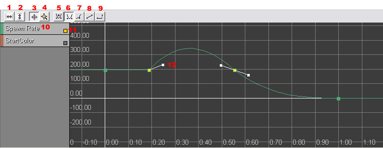
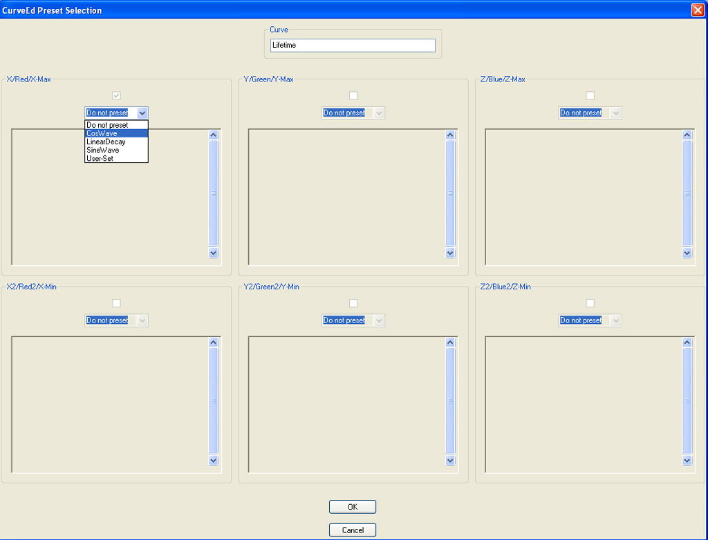
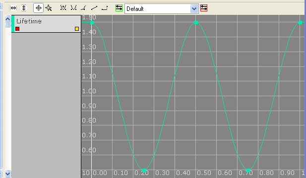
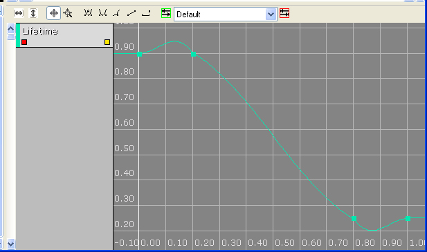
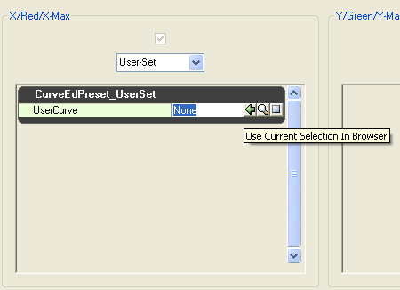

UDN
Search public documentation:
CurveEditorUserGuideJP
English Translation
中国翻译
한국어
Interested in the Unreal Engine?
Visit the Unreal Technology site.
Looking for jobs and company info?
Check out the Epic games site.
Questions about support via UDN?
Contact the UDN Staff
中国翻译
한국어
Interested in the Unreal Engine?
Visit the Unreal Technology site.
Looking for jobs and company info?
Check out the Epic games site.
Questions about support via UDN?
Contact the UDN Staff
カーブ エディタユーザーガイド
ドキュメントの概要: Unreal カーブ エディタ使用法のガイド。 James Golding により作成。 Richard Nalezynski? により維持。はじめに
UnrealEngine 3 の内蔵カーブ エディタでは、経過によって変わり行くプロパティにわたっても精密に制御できます。現在このカーブエディタは、 Matinee? と Cascade? 表示ツールの両方で使用できます。カーブ エディタの使用
カーブエディタは、 Matinee ? または Cascade ? から開くことができます。カーブエディタの概要
カーブエディタのレイアウト
下図はカーブ エディタを実行したところです。
| 1 | 表示トラックを水平方向にフィット |
| 2 | 表示トラックを垂直方向にフィット |
| 3 | パン/編集 |
| 4 | ズーム |
| 5 | 自動作成カーブ |
| 6 | ユーザー定義カーブ |
| 7 | カーブブレーク（角） |
| 8 | 線形モード。 |
| 9 | 座標軸並行線モード。 |
| 10 | カーブ名キー。 |
| 11 | カーブ表示/非表示ボタン。 |
| 12 | カーブ接線方向 ハンドル。 |
操作
カーブ エディタの操作は他の UnrealEngine 3 のツールと同様です。マウス コントロール
パン/編集のモードはこのようになっています。| 背景でクリック－ドラッグ | ビューのパン |
| マウスホイール | ズームイン／ズームアウト |
| キーのクリック | ポイントを選択 |
| ポイントを Ctrl-クリック | ポイントのトグル選択 |
| カーブを Ctrl-クリック | クリック位置に新キーを追加 |
| Ctrl-ドラッグ | 選択中要素を移動 |
| Ctrl-Alt-ドラッグ | 矩形選択 |
| Ctrl-Alt-Shift-ドラッグ | 矩形選択 (選択中要素に追加) |
| Del | 選択ポイントの削除 |
| Ctrl-Z | 元に戻す |
| Ctrl-Y | やり直し |
| Z | 押さえている間ズーム モード |
| 左クリック、垂直方向ドラッグ | Y 軸にズーム (出力) |
| 右クリック、水平方向ドラッグ | X 軸をズーム (入力) |
キーボード コントロール
パンニング/編集モード:| Delete | 選択した点を削除 |
| Ctrl-Z | 元に戻す |
| Ctrl-Y | やり直し |
| Z | キーが押下げられている間はズームモード |
ホットキー
カーブに関する作業
補間モード
補間モードボタン (図中 5～9 番) はカーブ上の各制御点から次の点への変化方法を制御します。カーブ モード ([Auto] (オート)、[User] (ユーザー)、[Break] (ブレーク)) のいずれかを使用している場合、白いハンドル (図中 12 番) が表れ、これをクリックおよびドラッグすることで、ポイントとポイントの間の曲線をより柔軟に操作できます。オート カーブ モードでキーを選択し、白いハンドル (12 番) でその角度を調節した場合、自動的にマニュアル モードに移行します。プリセット カーブ
カーブ エディタがプリセット カーブをサポートするようになりました。単純な自動生成曲線セットおよびユーザー定義カーブの保存または再利用をサポートします。 注記: プリセットカーブは単にカーブ エディタで使用するカーブのテンプレートを提供するだけです。テンプレートを使えば同じカーブを何度も作成する手間を省くことにより時間を節約することができます。CurveEdPresetCurve は普通の保存オブジェクトで、ユーザーがセーブしたプリセット カーブのデータを保持します。複数のオブジェクト間でカーブを「共有」するために使用することはできません。自動生成カーブ
エンジンが自動生成カーブを使用するには、カーブ エディタ左側のカラムで使用したいカーブを右クリックし、`Preset Curves'(プリセット カーブ)を選択します。すると以下のダイアログに当該カーブの分配型で有効なサブカーブを表示します。
図1: プリセットカーブのダイアログ プリセット ドロップダウン コンボボックスでは以下が選択可能です:- [Do Not Preset] (プリセット無効) - カーブを現状のまま保持します。
- [Cos Wave] (コサイン曲線) - コサイン関数 (垂直値)への入力値として周期値（水平値）を使用し、カーブを生成します。
- [Sine Wave] (サイン曲線) - サイン関数 (垂直値) への入力値として周期値（水平値）を使用し、カーブを生成します。
- [Linear Decay] （線形減少率曲線) - 線形減少率を利用してカーブを作成します。
- [User-Set] （ユーザー定義） - 保存しておいたユーザー定義のカーブをロードして使用します。
- 周波数 - 一定周期の波形を表す周波数 (現在は [0.0..1.0] に設定)。
- 倍率 - 計算値に乗算する倍率。カーブをユーザーの意向どおりに拡縮することができます。
- オフセット - （拡縮後の）値に適用するオフセット。すべての値を正にするときなどに使用します。

図 2: 生成したコサイン曲線の例 [Linear Decay] （線形減少率曲線） プリセットを選択した場合は、以下の設定パラメータが表示されます:- StartDecay - 減少開始周期
- StartValue - カーブ開始地点
- EndDecay - 減少停止周期
- EndValue - 減少停止地点の値

図 3: 生成した線形減少率曲線の例 この場合カーブは調整が必要になりますので注意してください。デフォルトでは、すべての自動生成のカーブにはカーブ補間メソッドとして自動設定が設定されます。線形減少率曲線の場合は、それぞれの点を選択して、補間メソッドを線形に設定すると「正しい」カーブになります。ユーザー定義カーブ
ユーザー定義カーブを使用するには、まずパッケージに CurveEdPresetCurve の インスタンスを作成する必要が有ります。これは標準のブラウザを右クリックし、[New CurveEdPresetCurve] を選択して作成します。必要に応じてカーブに名前をつけることができますが、今回は使用しません。カーブに名前をつけないと、オブジェクトはパラメータをパブリックに表示しません。 一度これを実行すると、このオブジェクトに保存できるようになります。カーブのラベルを右クリックし、[プリセット カーブ を保存] を選択して、カーブ エディタの左カラムに保存したいカーブを保存します。また、PresetCurve ダイアログをオープンしますが、ここで有効なオプションは以下に限られます:- [Do Not Preset ] (プリセット無効) ** [Do not save this curve] (このカーブを保存しない)。
- [User-Set] (ユーザー定義) ** [Save this curve] (このカーブを保存する)。

図 4: [User-Set] プロパティ ウィンドウ カーブを保存する標準ブラウザの中でカーブを選択し、プロパティ ウィンドウの [Use Current Object] (現在のオブジェクトを使用) ボタンをクリックします。[OK] ボタンを押すと選択したカーブオブジェクトにカーブが保存されます。 これで、[User-Set] (ユーザー定義) オプションを選択して、使用するカーブを標準ブラウザから選択するだけでカーブがプリセットされ、使用できるようになります。 使用上の注意その 1: プリセット コンボボックスで、オプションをマウスのクリックで選択すると、ダイアログが正しく更新されない場合があります。これが発生した場合、コンボボックスを選択し、上下のカーソルキーでプリセットカーブのオプションを選択します。 使用上の注意その 2: 現在、プリセットカーブは VectorUniformCurve 関数では使用来ません。この問題はできるだけ早期に解決するようにいたします。